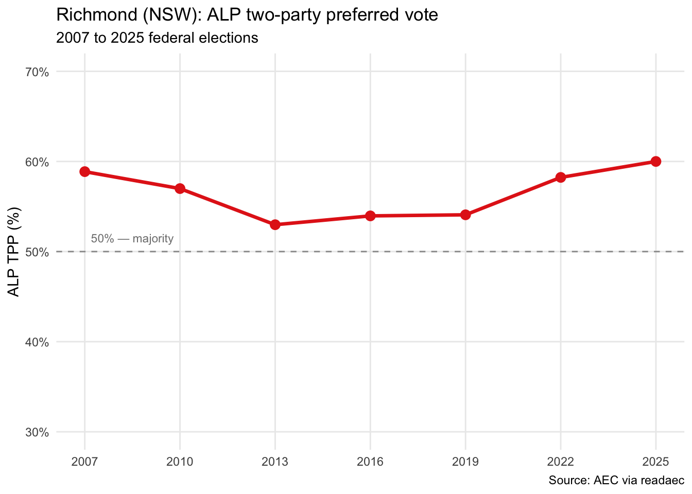
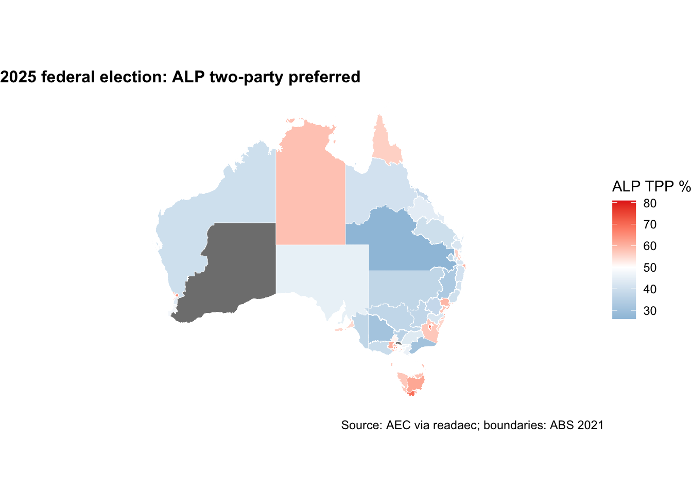
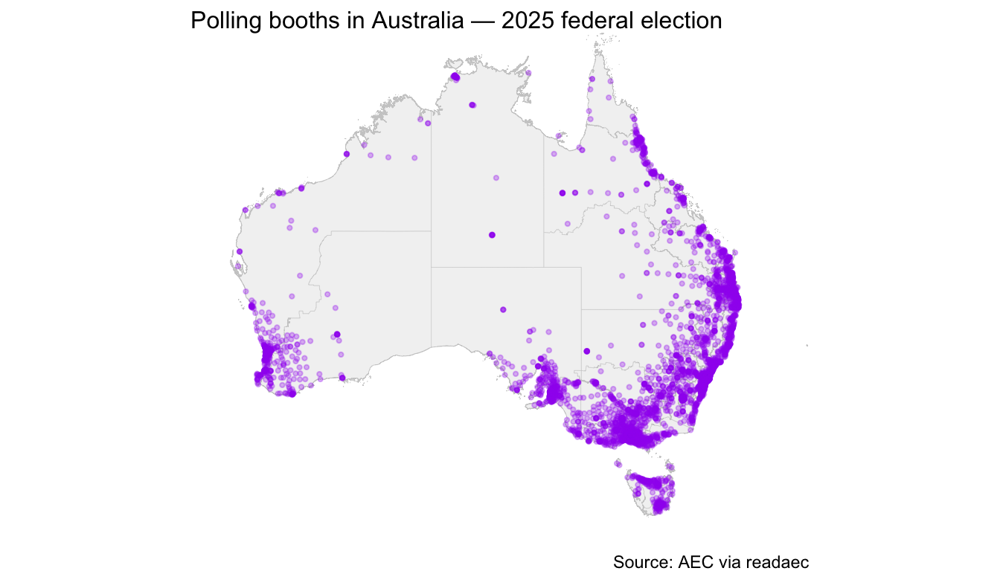
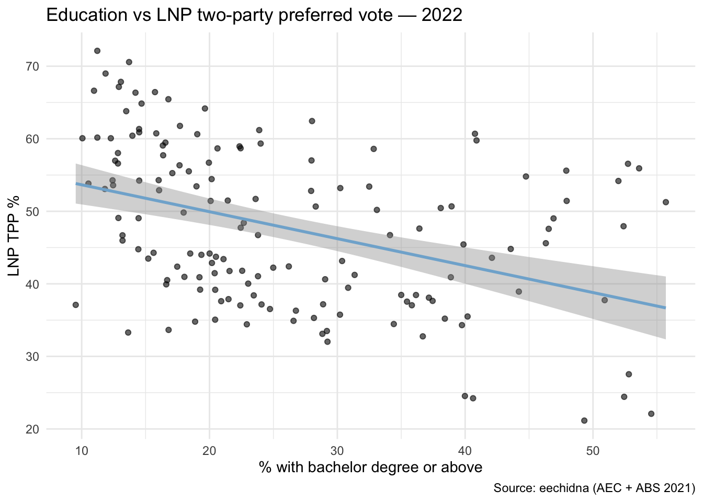
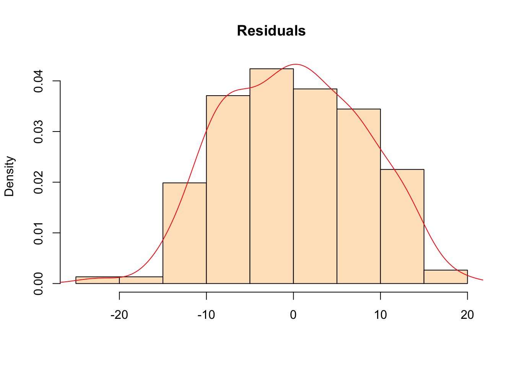

library(tidyverse)
library(sf)
library(strayr)
library(readaec)
library(eechidna)Australian election data
Elections tend to create fascinating data sets. They are spatial in nature, comparable over time — and more importantly they are consequential for all Australians.
Australia’s compulsory voting system is a remarkable feature of our Federation. Every three-ish years we all turn out at over 7,000 polling booths at our local schools, churches, and community centres to cast a ballot and pick up an obligatory election day sausage. The byproduct is a fascinating longitudinal and spatial data set.
One word of warning: I use the terms electorate, division, and seat interchangeably throughout this chapter.
Packages
The Australian Electoral Commission publishes detailed results for every federal election on their tally room at results.aec.gov.au. For elections from 2007 onwards this includes first preference votes, two-party preferred, two-candidate preferred, booth-level results, polling place coordinates, Senate counts, enrolment, and turnout — all updated live on election night.
The catch is that each election has its own URL structure built around an internal event ID, and column names shift between years without warning. The readaec package wraps the AEC’s CSV downloads in a consistent, tidy interface. One function call returns a clean data frame. Results are cached locally so you’re not hitting the AEC’s servers on every call.
For census analysis, the eechidna package takes a different approach: it bundles House of Representatives results from 2001 to 2022 as ready-to-use R data frames, with ABS demographic variables already apportioned to electoral boundaries. readaec and eechidna are complementary — readaec for live, current election results; eechidna for the census join.
The strayr package provides electoral boundary shapefiles from the ABS.
What’s available
list_elections() year event_id date type has_downloads
1 2001 10822 2001-11-10 general FALSE
2 2004 12246 2004-10-09 general FALSE
3 2007 13745 2007-11-24 general TRUE
4 2010 15508 2010-08-21 general TRUE
5 2013 17496 2013-09-07 general TRUE
6 2016 20499 2016-07-02 double_dissolution TRUE
7 2019 24310 2019-05-18 general TRUE
8 2022 27966 2022-05-21 general TRUE
9 2025 31496 2025-05-03 general TRUEreadaec covers all federal elections from 2007 to 2025. The AEC doesn’t provide the structured CSV downloads that readaec depends on for elections before 2007.
2025 results
Let’s start with the most recent election. Who won each seat?
members_2025 <- get_members_elected(2025)
head(members_2025, 10)# A tibble: 10 × 9
divisionid divisionnm stateab candidateid givennm surname partynm partyab
<dbl> <chr> <chr> <dbl> <chr> <chr> <chr> <chr>
1 179 Adelaide SA 41210 Steve GEORGANAS Austra… ALP
2 197 Aston VIC 40809 Mary DOYLE Austra… ALP
3 198 Ballarat VIC 40839 Catherine KING Austra… ALP
4 103 Banks NSW 41350 Zhi SOON Austra… ALP
5 180 Barker SA 41016 Tony PASIN Liberal LP
6 104 Barton NSW 41339 Ash AMBIHAIP… Austra… ALP
7 192 Bass TAS 41546 Jess TEESDALE Austra… ALP
8 318 Bean ACT 40676 David SMITH Austra… ALP
9 200 Bendigo VIC 40869 Lisa CHESTERS Austra… ALP
10 105 Bennelong NSW 41329 Jerome LAXALE Austra… ALP
# ℹ 1 more variable: year <dbl>A quick tally by party:
members_2025 |>
count(partyab, sort = TRUE)# A tibble: 8 × 2
partyab n
<chr> <int>
1 ALP 94
2 LP 18
3 LNP 16
4 IND 10
5 NP 9
6 GRN 1
7 KAP 1
8 XEN 1Margins
Which seats were the most marginal?
get_tpp(2025) |>
mutate(margin = abs(alp_pct - 50)) |>
arrange(margin) |>
select(division, state, alp_pct, lnp_pct, margin) |>
head(15)# A tibble: 15 × 5
division state alp_pct lnp_pct margin
<chr> <chr> <dbl> <dbl> <dbl>
1 Longman QLD 49.9 50.1 0.110
2 Bullwinkel WA 50.5 49.5 0.510
3 Wentworth NSW 50.6 49.4 0.560
4 Menzies VIC 51.1 48.9 1.08
5 Petrie QLD 51.2 48.8 1.17
6 Solomon NT 51.3 48.7 1.31
7 Bendigo VIC 51.4 48.6 1.40
8 Berowra NSW 48.4 51.6 1.63
9 Forde QLD 51.8 48.2 1.77
10 La Trobe VIC 47.9 52.1 2.06
11 Curtin WA 47.8 52.2 2.16
12 Forrest WA 47.8 52.2 2.24
13 Kooyong VIC 47.6 52.4 2.37
14 Banks NSW 52.4 47.6 2.39
15 Bowman QLD 47.6 52.4 2.43 And the safest seats — won by the largest margins:
get_tpp(2025) |>
mutate(margin = abs(alp_pct - 50)) |>
arrange(desc(margin)) |>
select(division, state, alp_pct, lnp_pct, margin) |>
head(10)# A tibble: 10 × 5
division state alp_pct lnp_pct margin
<chr> <chr> <dbl> <dbl> <dbl>
1 Wills VIC 80.9 19.1 30.9
2 Grayndler NSW 80.2 19.8 30.2
3 Cooper VIC 78.5 21.5 28.5
4 Sydney NSW 78.1 21.9 28.1
5 Canberra ACT 76.4 23.6 26.4
6 Melbourne VIC 74.0 26.0 24.0
7 Maranoa QLD 26.0 74.0 24.0
8 Watson NSW 72.9 27.1 22.9
9 Fenner ACT 72.1 27.9 22.1
10 Fraser VIC 72.0 28.0 22.0Cross-election trends
National swing
The get_swing() function computes the change in two-party preferred vote between any two elections. A positive alp_swing means the seat moved toward Labor.
get_swing(2022, 2025) |>
select(division, state, alp_pct_from, alp_pct_to, alp_swing, seat_changed) |>
arrange(desc(abs(alp_swing))) |>
head(15)# A tibble: 15 × 6
division state alp_pct_from alp_pct_to alp_swing seat_changed
<chr> <chr> <dbl> <dbl> <dbl> <lgl>
1 Braddon TAS 42.0 57.2 15.2 TRUE
2 Fowler NSW 55.7 68.2 12.5 FALSE
3 Bendigo VIC 62.1 51.4 -10.7 FALSE
4 Lyons TAS 50.9 61.6 10.7 FALSE
5 Hughes NSW 43.0 53.1 10.1 TRUE
6 Hasluck WA 56 66.0 9.97 FALSE
7 Leichhardt QLD 46.6 56.1 9.5 TRUE
8 Bass TAS 48.6 58.0 9.44 TRUE
9 Bonner QLD 46.6 55 8.41 TRUE
10 Bennelong NSW 51.0 59.3 8.28 FALSE
11 Berowra NSW 40.2 48.4 8.14 FALSE
12 Solomon NT 59.4 51.3 -8.06 FALSE
13 Bruce VIC 56.6 64.6 8.03 FALSE
14 Parramatta NSW 54.6 62.6 7.98 FALSE
15 Boothby SA 53.3 61.1 7.82 FALSE # How many seats changed hands?
swing_2022_25 <- get_swing(2022, 2025)
table(swing_2022_25$seat_changed)
FALSE TRUE
136 16 Richmond across time
Richmond (NSW) is a useful seat to trace across elections — it has a strong Greens vote that flows heavily to Labor on preferences, making it a good illustration of how preferential voting works in practice.
years <- list_elections()$year[list_elections()$has_downloads]
tpp_richmond <- map_dfr(years, function(yr) {
get_tpp(yr) |>
filter(tolower(division) == "richmond")
})
ggplot(tpp_richmond, aes(x = year, y = alp_pct)) +
geom_line(colour = "#E4281B", linewidth = 1.2) +
geom_point(colour = "#E4281B", size = 3) +
geom_hline(yintercept = 50, linetype = "dashed", colour = "grey60") +
annotate("text", x = 2007.2, y = 51.5,
label = "50% — majority", size = 3, colour = "grey50", hjust = 0) +
scale_x_continuous(breaks = years) +
scale_y_continuous(limits = c(30, 70), labels = function(x) paste0(x, "%")) +
labs(
title = "Richmond (NSW): ALP two-party preferred vote",
subtitle = "2007 to 2025 federal elections",
x = NULL, y = "ALP TPP (%)",
caption = "Source: AEC via readaec"
) +
theme_minimal() +
theme(panel.grid.minor = element_blank())
Election maps
Geography matters enormously in Australian politics. Electorates vary from Durack in Western Australia (1.63 million square kilometres) to Grayndler in inner Sydney (32 square kilometres). The AEC carves up the population by state and territory, using a formula to allocate seats, then draws boundaries to achieve roughly equal populations per electorate.
At time of writing, the seat allocation is:
| State/Territory | Seats |
|---|---|
| New South Wales | 47 |
| Victoria | 39 |
| Queensland | 30 |
| Western Australia | 15 |
| South Australia | 10 |
| Tasmania | 5 |
| Australian Capital Territory | 3 |
| Northern Territory | 2 |
| Total | 151 |
Let’s map the 2025 TPP result across all 151 divisions.
ced2021 <- strayr::read_absmap("ced2021")tpp_2025 <- get_tpp(2025) |>
mutate(division = str_to_title(division))
map_data <- ced2021 |>
rename(division = ced_name_2021) |>
left_join(tpp_2025, by = "division")
ggplot(map_data) +
geom_sf(aes(fill = alp_pct), colour = "white", linewidth = 0.1) +
scale_fill_gradient2(
low = "#80b1d3", mid = "white", high = "#E4281B",
midpoint = 50, name = "ALP TPP %"
) +
labs(
title = "2025 federal election: ALP two-party preferred",
caption = "Source: AEC via readaec; boundaries: ABS 2021"
) +
theme_void() +
theme(plot.title = element_text(face = "bold", size = 12))
Booth-level data
The AEC publishes polling place locations and vote counts at the booth level. With over 7,000 booths nationally, this is where the spatial story gets genuinely granular — even within a single electorate, booths can lean very differently.
booths <- get_polling_places(2025)
head(booths, 10)# A tibble: 10 × 16
state divisionid divisionnm pollingplaceid pollingplacetypeid pollingplacenm
<chr> <dbl> <chr> <dbl> <dbl> <chr>
1 ACT 318 Bean 93925 5 Belconnen BEAN…
2 ACT 318 Bean 11877 1 Bonython
3 ACT 318 Bean 11452 1 Calwell
4 ACT 318 Bean 8761 1 Chapman
5 ACT 318 Bean 8763 1 Chisholm
6 ACT 318 Bean 93916 1 City (Bean)
7 ACT 318 Bean 93922 5 City BEAN PPVC
8 ACT 318 Bean 124111 1 City North (Be…
9 ACT 318 Bean 124103 5 City North BEA…
10 ACT 318 Bean 31298 1 Conder
# ℹ 10 more variables: premisesnm <chr>, premisesaddress1 <chr>,
# premisesaddress2 <chr>, premisesaddress3 <lgl>, premisessuburb <chr>,
# premisesstateab <chr>, premisespostcode <chr>, latitude <dbl>,
# longitude <dbl>, year <dbl>ggplot() +
geom_sf(data = ced2021, fill = "grey95", colour = "grey80", linewidth = 0.1) +
geom_point(
data = booths,
aes(x = longitude, y = latitude),
colour = "purple", size = 0.8, alpha = 0.3
) +
xlim(112, 157) + ylim(-44, -11) +
labs(
title = "Polling booths in Australia — 2025 federal election",
caption = "Source: AEC via readaec"
) +
theme_void() +
theme(plot.title = element_text(size = 12))
We can also pull TPP results at the booth level. Figuring out where votes come from within an electorate is fundamental to campaign strategy — even small seats have pockets of strongly opposing sentiment.
tpp_booths <- get_tpp_by_booth(2025)
head(tpp_booths)# A tibble: 6 × 12
stateab divisionid divisionnm pollingplaceid pollingplace
<chr> <dbl> <chr> <dbl> <chr>
1 ACT 318 Bean 93925 Belconnen BEAN PPVC
2 ACT 318 Bean 11877 Bonython
3 ACT 318 Bean 11452 Calwell
4 ACT 318 Bean 8761 Chapman
5 ACT 318 Bean 8763 Chisholm
6 ACT 318 Bean 93916 City (Bean)
# ℹ 7 more variables: `australian labor party votes` <dbl>,
# `australian labor party percentage` <dbl>,
# `liberal/national coalition votes` <dbl>,
# `liberal/national coalition percentage` <dbl>, totalvotes <dbl>,
# swing <dbl>, year <dbl>Census analysis
eechidna does something genuinely difficult: it apportions ABS census variables to Commonwealth Electoral Division boundaries. Census data is collected at the mesh block level, but electoral boundaries don’t align with census boundaries — the eechidna team has done the spatial concordance work so you don’t have to. The result is a data frame with ~80 demographic variables, one row per electorate, ready to join directly with election results.
data(tpp22)
data(abs2021)
election2022 <- left_join(abs2021, tpp22, by = "DivisionNm")A simple but telling question: does education level predict LNP support?
ggplot(election2022, aes(x = BachelorAbv, y = LNP_Percent)) +
geom_point(alpha = 0.6) +
geom_smooth(method = "lm", se = TRUE, colour = "#80b1d3") +
labs(
title = "Education vs LNP two-party preferred vote — 2022",
x = "% with bachelor degree or above",
y = "LNP TPP %",
caption = "Source: eechidna (AEC + ABS 2021)"
) +
theme_minimal()
The negative relationship is striking — and quite recent. A university-educated vote was historically a Liberal stronghold; the teal wave of 2022 flipped that relationship in inner-city and coastal seats.
A lean regression with a handful of theoretically interesting variables:
model <- lm(
LNP_Percent ~ BachelorAbv + MedianPersonalIncome + MedianAge + NoReligion + Indigenous,
data = election2022
)
summary(model)
Call:
lm(formula = LNP_Percent ~ BachelorAbv + MedianPersonalIncome +
MedianAge + NoReligion + Indigenous, data = election2022)
Residuals:
Min 1Q Median 3Q Max
-22.3464 -6.5855 -0.2546 6.4105 19.0103
Coefficients:
Estimate Std. Error t value Pr(>|t|)
(Intercept) -24.57466 8.85838 -2.774 0.00626 **
BachelorAbv -0.43279 0.10439 -4.146 5.74e-05 ***
MedianPersonalIncome 0.04856 0.01122 4.329 2.78e-05 ***
MedianAge 1.81639 0.19911 9.123 5.66e-16 ***
NoReligion -0.36076 0.08669 -4.161 5.40e-05 ***
Indigenous 0.40329 0.17452 2.311 0.02225 *
---
Signif. codes: 0 '***' 0.001 '**' 0.01 '*' 0.05 '.' 0.1 ' ' 1
Residual standard error: 8.02 on 145 degrees of freedom
Multiple R-squared: 0.4916, Adjusted R-squared: 0.4741
F-statistic: 28.04 on 5 and 145 DF, p-value: < 2.2e-16hist(model$residuals, col = "bisque", freq = FALSE,
main = "Residuals", xlab = "")
lines(density(model$residuals), col = "red")
One caution: this is an ecological regression — we’re modelling electorate-level aggregates, not individual votes. Interpreting the coefficients as individual-level effects would be the ecological fallacy. It tells us about the geographic pattern of voting, not about individuals.
Informal votes
Over 700,000 people — around 5% of all votes cast — vote informally each election. Of these, over half have ‘no clear first preference’, meaning their vote did not contribute to the tally of any candidate.
Informal votes are genuinely fascinating. Not only are there 8 official categories (the AEC publishes a detailed breakdown here), but the rate of informal voting varies tremendously by electorate.
Broadly, informal votes fall into two buckets:
Protest votes — a deliberate choice to opt out, whether in opposition to the democratic system, the local candidate field, or the available choices for Prime Minister.
Stuff-ups — voters who filled in the form incorrectly. The AEC works hard to reduce these through clear ballot design and instructions, but some are inevitable.
The geographic distribution of informal voting is worth exploring in its own right. It is not randomly distributed — the variation tells a story about disengagement and political alienation that the formal results don’t capture.